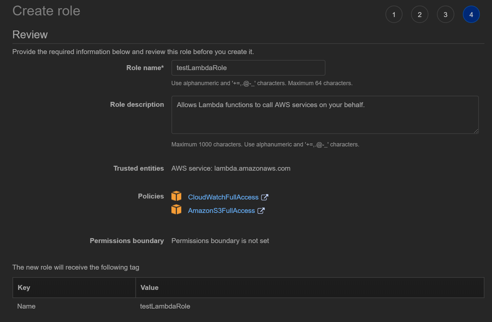

Access S3, DynamoDB with Lambda
목표
- AWS Lambda를 이용해 AWS S3, DynamoDB 이벤트에 반응하기
- Test Event 사용해서 효율성 높이기
Lambda 생성하기
-
Lambda에서 사용할 권한을 Role로 만들어줍니다
CloudWatch에 의해 이벤트가 실행되므로 반드시 CloudWatch쓰기 권한을 부여해야 합니다

-
Lambda이름과 Role만 지정하고 기본값으로 진행합니다

-
Deploy하고 Test → Create를 누르면 샘플코드가 실행됩니다
-
select a test event → configure test events → create로 샘플 이벤트를 생성해줍니다


-
print(event) 코드를 추가하고 Deploy한 후 Test를 실행합니다

-
lambda가 정상적으로 동작하였습니다

AWS S3 객체 생성 이벤트에 반응하기
-
Lambda에 S3 접근 권한이 있는지 확인합니다

-
트리거를 생성합니다

-
이 트리거는 S3의 create이벤트에 반응하도록 설정합니다
S3 Bucket, Event Type을 지정하고 요금이 많이 나올 수 있는것에 주의하라는 경고도 동의합니다

-
lambda와 S3가 잘 연결되었습니다

-
아래 코드를 lambda_function에 덮어씌워줍니다
"Lambda function Calculator exercise"
from __future__ import print_function
import re
import boto3
def lambda_handler(event, context):
"Process upload event"
bucket = event['Records'][0]["s3"]["bucket"]["name"]
key = event['Records'][0]["s3"]["object"]["key"]
result = "No numbers found in file"
print("Received event. Bucket: [%s], Key: [%s]" % (bucket, key))
# construct s3 client
s3 = boto3.client('s3')
response = s3.get_object(
Bucket=bucket,
Key=key
)
# get the object contents
file_contents = response['Body'].read().decode("utf-8").strip()
# find matches of all positive or negative numbers
numbers = [int(n) for n in re.findall(r"-?\d+", file_contents)]
if numbers:
# caclulate min/max/average
mn, mx, avg = min(numbers), max(numbers), sum(numbers)/len(numbers)
result = "Min: %s Max: %s Average: %s" % (mn, mx, avg)
print("Result: %s" % result)
return result
-
⭐코드 작성 완료 후 반드시 Deploy 해줍니다

-
다음과 같이 숫자데이터가 들어있는 txt파일을 준비합니다

-
연결한 S3에 txt파일을 업로드합니다


-
AWS CloudWatch → Logs → Log groups의 sample-lambda에 새로운 Log가 기록되어있습니다

-
log를 확인하면 코드가 잘 실행된 것을 확인할 수 있습니다

Lambda test event 활용하기
- 코드를 Deploy 할 때마다 S3에 매번 업로드하고 CloudWatch 로그에 들어가 오류를 점검하기는 너무 힘드니 test event를 사용해봅시다
-
test목록을 열고 configure test events에 진입합니다

-
다음 코드를 이용해 새로운 test event를 생성합니다
{
"Records": [
{
"s3": {
"bucket": {
"name": "kekekekeke"
},
"object": {
"key": "numbers.txt"
}
}
}
]
}

-
AWS에서 제공하는 샘플 test event도 사용해볼 수 있습니다

-
방금 만든 테스트를 선택하고 Test 버튼을 누릅니다

-
마치 S3에 새로운 파일이 업로드 된 것 같이 코드가 잘 실행되었습니다

DynamoDB 연동하기
-
DynamoDB Inventory 테이블을 생성합니다

-
Lambda Role에 DynamoDB 권한 부여하기


-
Lambda에 다음 코드를 작성합니다
# Load-Inventory Lambda function
# This function is triggered by an object being created in an Amazon S3 bucket.
# The file is downloaded and each line is inserted into a DynamoDB table.
import json, urllib, boto3, csv
# Connect to S3 and DynamoDB
s3 = boto3.resource('s3')
dynamodb = boto3.resource('dynamodb')
# Connect to the DynamoDB tables
inventoryTable = dynamodb.Table('Inventory');
# This handler is executed every time the Lambda function is triggered
def lambda_handler(event, context):
# Show the incoming event in the debug log
print("Event received by Lambda function: " + json.dumps(event, indent=2))
# Get the bucket and object key from the event
bucket = event['Records'][0]['s3']['bucket']['name']
key = urllib.parse.unquote_plus(event['Records'][0]['s3']['object']['key'])
localFilename = '/tmp/inventory.txt'
# Download the file from S3 to the local filesystem
try:
s3.meta.client.download_file(bucket, key, localFilename)
except Exception as e:
print(e)
print('Error getting object {} from bucket {}. Make sure they exist and your bucket is in the same region as this function.'.format(key, bucket))
raise e
# Read the Inventory CSV file
with open(localFilename) as csvfile:
reader = csv.DictReader(csvfile, delimiter=',')
# Read each row in the file
rowCount = 0
for row in reader:
rowCount += 1
# Show the row in the debug log
print(row['store'], row['item'], row['count'])
try:
# Insert Store, Item, and Count into the Inventory table
inventoryTable.put_item(
Item={
'Store': row['store'],
'Item': row['item'],
'Count': int(row['count'])})
except Exception as e:
print(e)
print("Unable to insert data into DynamoDB table".format(e))
# Finished!
return "%d counts inserted" % rowCount
-
코드를 Deploy 해줍니다

-
이벤트 트리거를 가지고 있는 S3에 샘플파일을 업로드 합니다